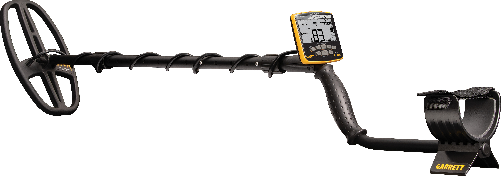
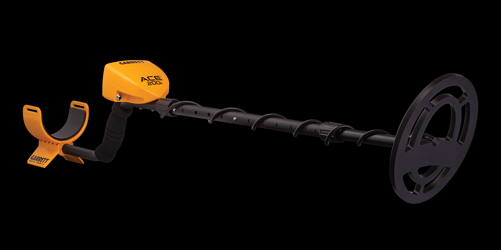
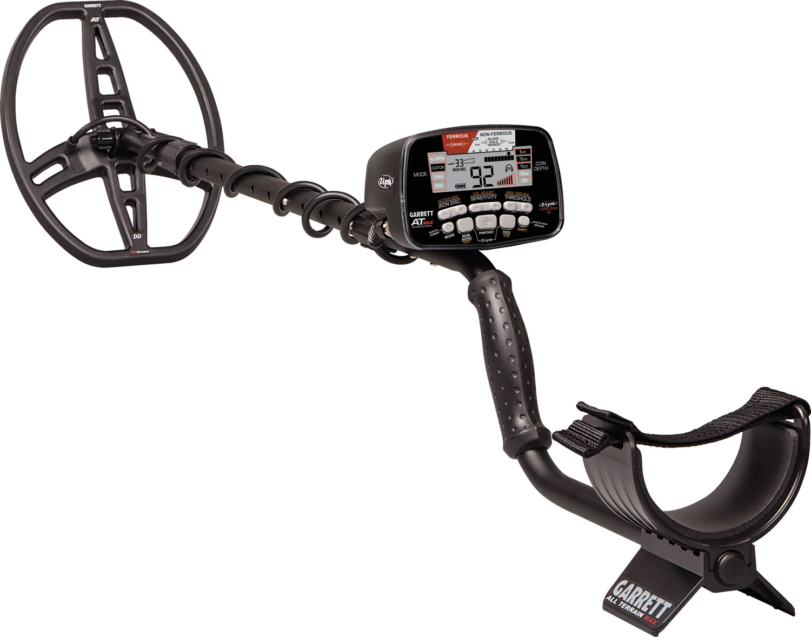

Artigos em Destaque
5 artigos
Como Escolher um Detector de Metais Profissional: Guia Completo 2025
Frequência de operação, profundidade de detecção, impermeabilidade, tecnologia de bobina — explicamos cada critério para que você invista com segurança e encontre o modelo ideal para sua necessidade.
Ler artigo completo
Detector de Metais em Aeroportos: Como Funciona na Prática
Entenda a tecnologia por trás dos portais walk-through e detectores hand-held usados em aeroportos, terminais e eventos — e por que a linha Garrett é a preferida no Brasil.
Ler artigoMelhor Detector para Encontrar Ouro no Brasil em 2025
Garimpo em solo brasileiro exige equipamento preparado para nossa mineralogia. Comparamos AXIOM, AT Gold e Goldmaster 24K para você escolher o certo.
Ler artigo
Vale a Pena Investir em um Detector de Metais?
Analisamos custo-benefício real: quanto custa começar, quanto tempo leva para pagar o investimento e quais perfis de uso justificam a compra de um detector profissional.
Ler artigo
Diferença entre Detector Profissional e Hobby: Qual Escolher?
Tecnologia Multi-IQ, frequência única, discriminação de alvos — explicamos o que realmente diferencia um detector de entrada de um equipamento profissional.
Ler artigo